Karmabound
Um torneio dark fantasy por turnos em que você não escolhe seu poder — gira por ele. Todo azar fica preso ao seu Carma, e quando o Carma transborda, no pior momento, você desperta.
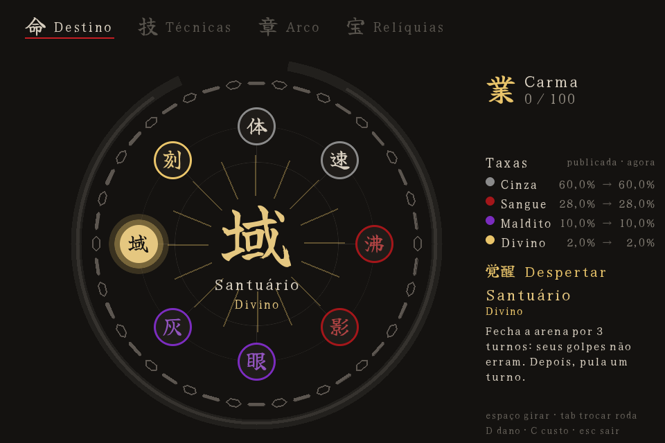
運O azar como suspense
Num roguelite, a sorte costuma ser o inimigo: o giro ruim é só frustração. Karmabound inverte isso. Cada giro abaixo de raro, cada golpe recebido, cada preço pago por um poder enche um medidor — o Carma. Quando ele está quase cheio, o jogador passa a torcer pela desgraça, porque ela traz o Despertar mais perto.
Três pilares seguram o resto do jogo:
- O azar é suspense, não frustração.
- Todo poder tem um preço. Poderes absurdos existem e são a recompensa — mas cobram à altura, e o jogador decide se vale pagar.
- A roleta é o jogo. As decisões importantes acontecem entre girar e escolher; a luta é onde você descobre se escolheu bem.
命Quatro rodas, um destino
Toda decisão aleatória passa pela mesma roleta. Cada propósito é só uma roda diferente, definida em dados:
| Roda | Decide | Modo | |
|---|---|---|---|
| 命 | Destino | O Dom inato e a origem do personagem | gira e aceita |
| 技 | Técnicas | Golpes, defesas e técnicas malditas | gira 3, escolhe 1 |
| 章 | Arco | A regra do capítulo | gira e aceita |
| 宝 | Relíquias | Itens; duplicatas evoluem o que você já tem | gira e aceita |
Na tela, cada roda é uma mandala de selos: um círculo ritual em que cada fatia é um selo com um kanji. O selo aceso corre pelo círculo, desacelera e para. O resultado já estava decidido antes de a animação começar — o sorteio é feito pela regra, por seed, e a tela só mostra o caminho até ele. Por isso qualquer giro estranho é reproduzível.
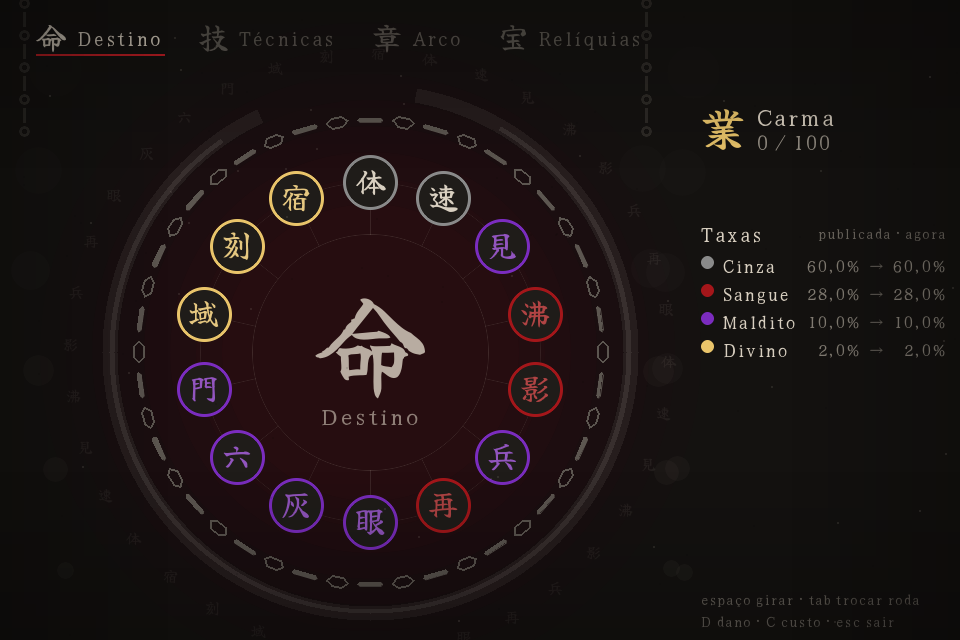
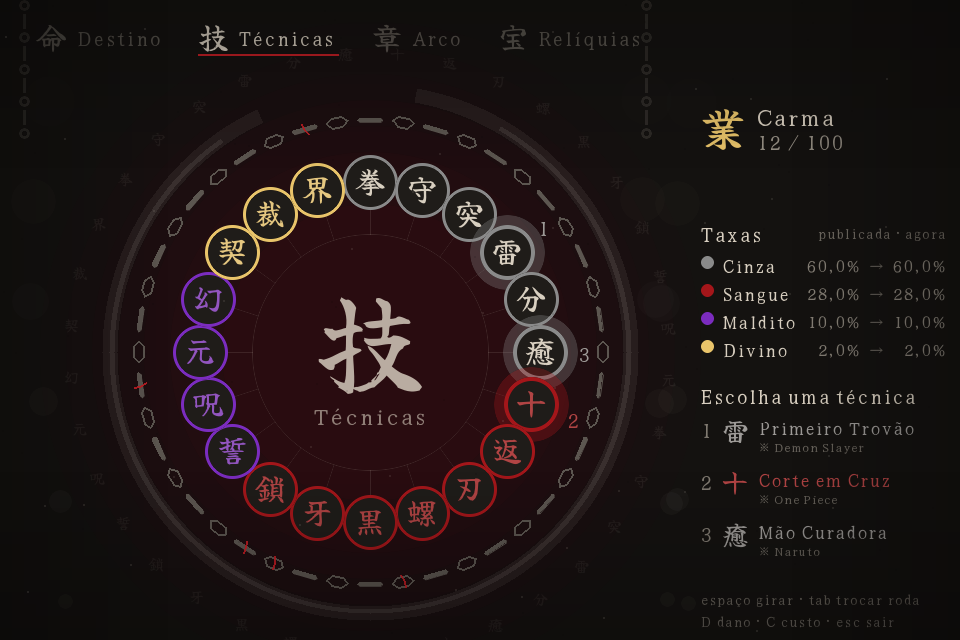
墨As raridades são tinta
Quatro raridades, cada uma com uma cor que é também identidade visual. A ordem é a ordem de valor.
| Raridade | Chance publicada | Carma por giro |
|---|---|---|
| Cinza | 60% | +8 |
| Sangue | 28% | +4 |
| Maldito | 10% | 0 |
| Divino | 2% | −40 |
Um Divino que vem por sorte consome 40 de Carma: a boa sorte paga o carma. E a tela sempre mostra a taxa publicada ao lado da taxa de agora, já com o pity aplicado. Não há dinheiro no jogo, e nunca vai haver.
業O Carma é uma corrente
O Carma é um pity compartilhado entre todas as rodas: azar numa Relíquia ajuda o próximo Destino. Na tela ele não é uma barra — são 44 elos de corrente em volta da mandala.
- Enche com giros ruins, com dano recebido e com o preço dos poderes pagos. Sofrer alimenta o Carma; perder uma luta, não — a derrota acaba a run, e ninguém deve ganhar nada perdendo de propósito.
- Pity suave: acima de 60, Malditos e Divinos ficam mais prováveis, até três vezes. Os elos racham e avermelham.
- Transbordo: em 100, as correntes tremem em vermelho vivo e o Carma trava. Um giro bom não apaga um Despertar já garantido.
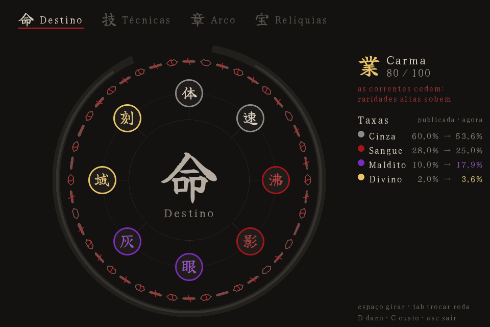
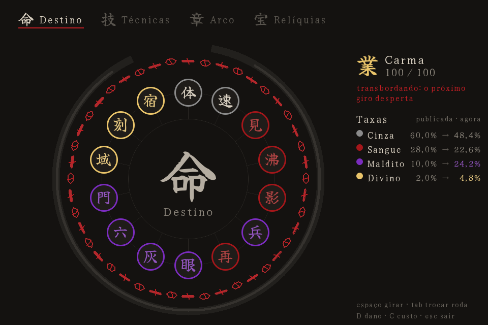
覚A roda se quebra
O Despertar acontece na luta. Com o Carma cheio, você desperta quando quiser — sem gastar o turno — ou ele dispara sozinho quando um golpe ia te matar, e o golpe não vem. O tipo sai de uma roda própria, a Roda do Despertar, com oito: 報 Retribuição (a dor que você levou na luta volta ao rival), 奪 Tomar o Destino (você rouba a melhor técnica dele e trava as outras), 醒 Forma Desperta (dano dobrado, sem recarga), 鳳 Renascer das Cinzas (cura total e dois golpes que não ferem), 卍 Liberação Final (o Bankai: suas técnicas sobem um nível na luta), 極 Instinto Puro (o Ultra Instinto: 60% de esquiva, com revide), 仙 Modo Eremita (o Modo Sábio) e 痣 Marca do Caçador (+50% de dano, ao preço de vida máxima para sempre). E o giro seguinte, depois da luta, vem Divino garantido.
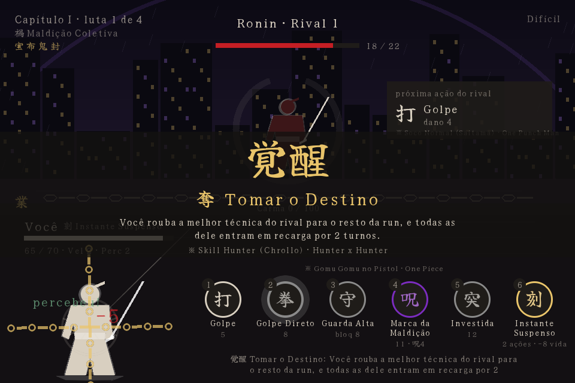
A frequência foi decidida antes de qualquer número: uma ou duas vezes por run, para ser um momento lembrado e não uma rotina. Com lutas reais simuladas, o jogador desperta cerca de 1,2 vez por run. Algumas runs terminam sem nenhum Despertar — nem todo mundo recebe seu momento.
闘Uma luta que cabe na cabeça
Duelo 1v1, turnos alternados, e a regra mais simples que ainda gera decisões: só recarga.
- No seu turno, você usa uma técnica pronta. Ela fica fora por alguns turnos seus. O Golpe básico nunca entra em recarga: ninguém fica sem ação.
- Quatro espaços de técnica. Uma técnica nova ganha na roleta substitui uma antiga.
- A vida persiste pela run, com 30% de cura entre lutas. Cada luta desgasta a próxima.
- Velocidade decide quem começa — e quem começa tenta um ataque surpresa: se não for percebido, causa 50% a mais.
- O rival anuncia e cumpre. Ele decide a próxima ação ao fim do turno dele, antes de você escolher.
察Perceber é sentir o perigo
Percepção não decide quem age primeiro. Ela é o instinto de quem já esteve perto da morte.
Todo golpe tem uma Sutileza, de 0 a 3. Contra um golpe perigoso (ou contra a surpresa), se a sua Percepção for maior ou igual à Sutileza dele, você reage: leva metade e devolve um golpe. Não há dado nessa regra — a sorte já está toda na roleta, e a luta precisa ser legível. Calibrada, a Percepção salva o jogador em cerca de um terço dos golpes perigosos.
A mesma Percepção decide o quanto você lê do rival: com 0, nada; com 1, o tipo da próxima ação (ataque, defesa, maldita); com 2, a técnica exata.
道Uma run, tela a tela
Uma run começa no título, com a escolha do modo, e passa pelo Destino, pelo Arco de cada capítulo, por doze lutas e pelos giros entre elas, até a vitória ou a queda.
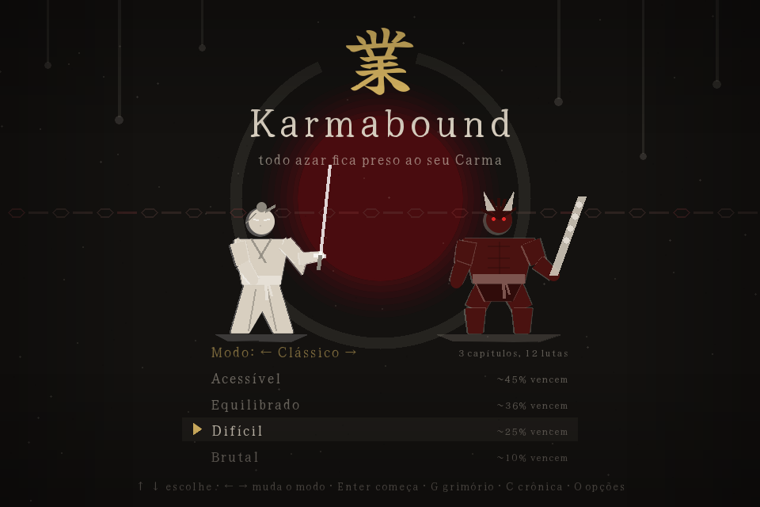
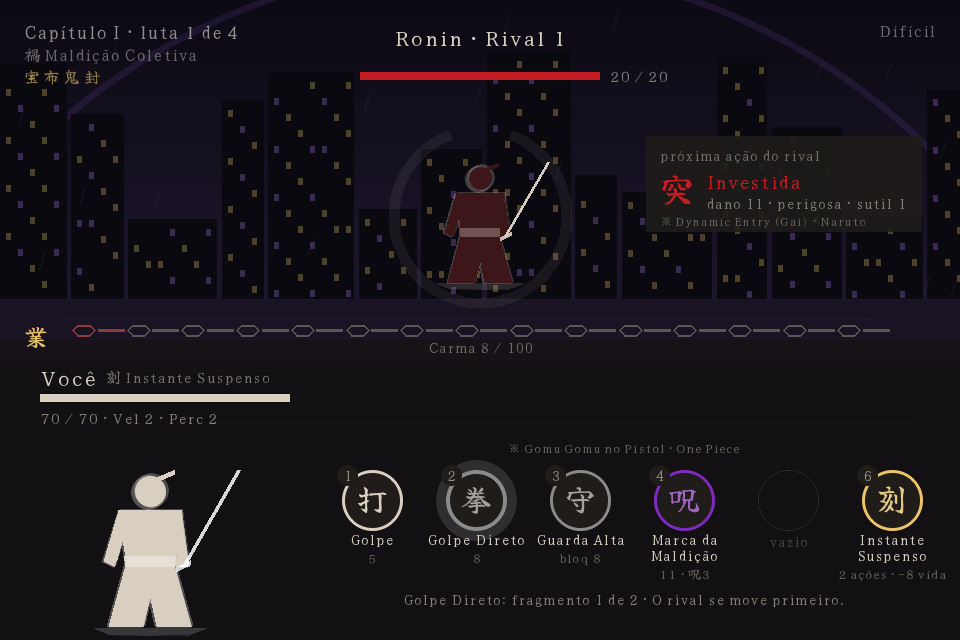
Os lutadores são silhuetas de tinta — hakama e espada feitos de polígonos, com passadas de pincel deslocadas — enquanto não há arte de personagem. Cada ação leva cerca de 0,6 segundo: o golpe avança, o alvo treme, o dano sobe e some, e o rival responde sozinho.
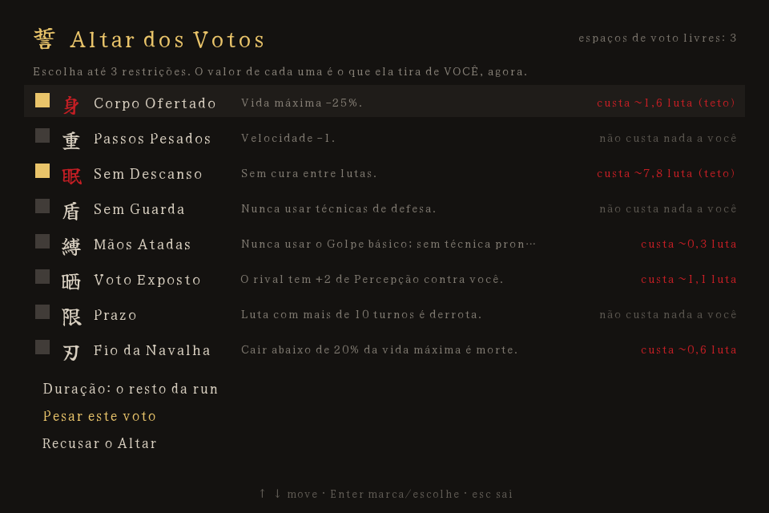
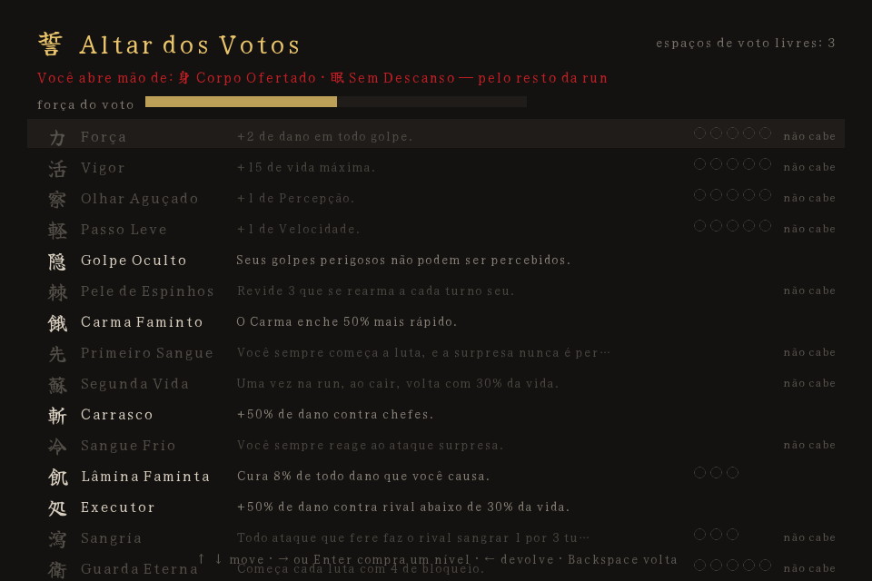
契Quebrados, mas com preço
Os poderes mais raros não foram contidos: foram cobrados. Cada um foi medido em pontos de vitória — o jogador começa a run com ele, contra a mesma run com uma técnica comum — e ajustado até caber numa régua: Maldito entre +5 e +10, Divino entre +10 e +20.
| Poder | O que faz | O preço | Vale | |
|---|---|---|---|---|
| 呪 | Marca da Maldição | Golpe de 10; o rival sofre 4 a cada turno, e as Marcas se somam | você sofre 1 por turno por Marca | +4,5 |
| 契 | Contrato | Golpe de 40, uma vez por luta; o demônio cresce +7 a cada técnica consumida | cada uso destrói uma das suas outras técnicas, para sempre | +12 |
| 裁 | Julgamento | Dano igual a 1,8 × o seu Carma | consome todo o Carma — e o Despertar que vinha com ele | +15 |
O Julgamento é a escolha mais temática do jogo: a dor acumulada pode virar um golpe agora ou esperar o Despertar. Não dá para ter os dois.
宝Tudo o que sai da roleta vale
O Dom do Destino muda a run inteira: alguns são passivos (Corpo Resistente, Sangue Fervente, Sombra Leal, Pele de Cinzas; Reflexo Treinado é a única sorte dentro da luta, uma chance de esquiva), outros são uma técnica própria num sexto selo (Olho Roubado, Santuário, Instante Suspenso). As Relíquias se acumulam e repetidas se somam. O Arco muda a regra do capítulo para os dois lados — a Invasão chega a acrescentar uma luta. E uma técnica que sai de novo vira fragmento: dois fragmentos fazem ela evoluir para o nível II.
Cada item foi medido do mesmo jeito que os poderes, contra uma régua por raridade: Cinza +1 a +3, Sangue +3 a +5, Maldito +5 a +10, Divino +10 a +20. Dois achados vieram da medição, não do papel: o Instante Suspenso gastava o próprio turno e devolvia um (ganho zero) até virar "duas ações depois dele"; e qualquer preço em Carma pesa demais enquanto o Carma cheio garante um Divino — por isso o Instante custa vida.
源Todo poder tem uma origem
Cada uma das 59 habilidades é uma homenagem com nome próprio: o jogo não usa o nome do original, mas escreve a origem na carta — ※ Rasengan · Naruto. Ela aparece na roleta, sob o selo escolhido na luta, na leitura da intenção do rival e no Grimório, que guarda entre runs tudo o que já saiu da roleta.
A homenagem não é só o nome: a mecânica vem da cena original. A Espiral Concentrada (Rasengan) atravessa o bloqueio. O Clarão Negro (Kokusen) tem 20% de chance de sair ×2,5, e ninguém controla quando. A Corrente do Julgamento (Kurapika) prende a ação que o rival anunciou. A Esfera dos Mil (Genki Dama) cresce com toda a dor que você sofreu. O Corte do Mundo (Sukuna) atravessa tudo e não pode ser percebido, mas só fica pronto no quarto turno, como o corte que precisou ver a adaptação antes. O Corpo Perfeito (Sukuna da Era Heian) dá quatro braços e tira a defesa. E o Ovo do Eclipse (Behelit) desperta à beira da morte, mesmo sem Carma — ao preço do seu Dom.
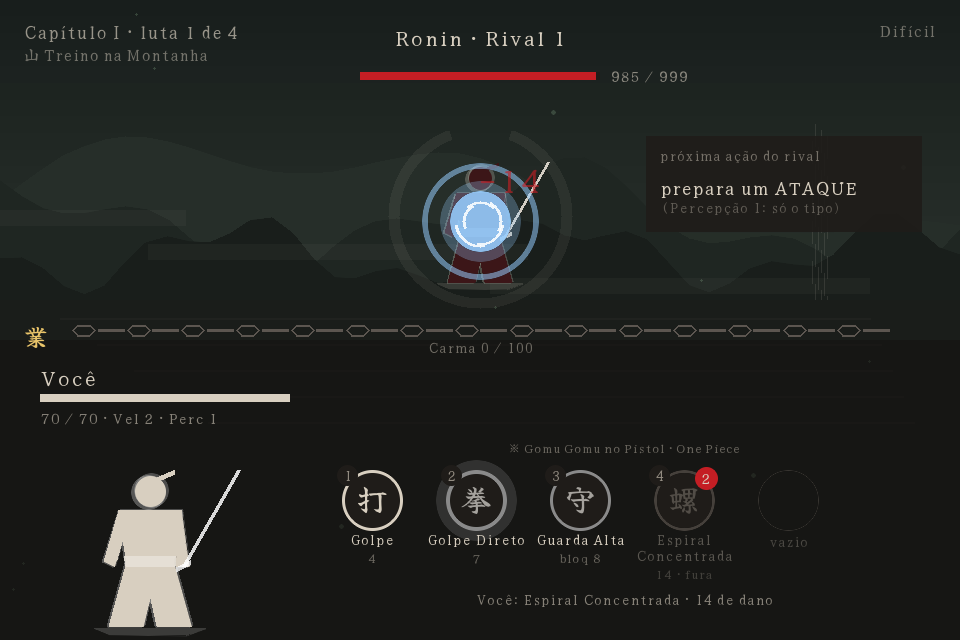
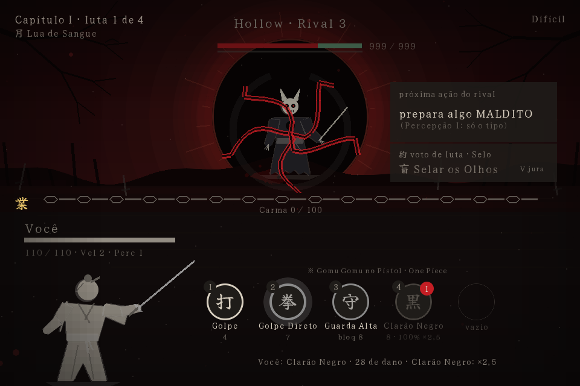
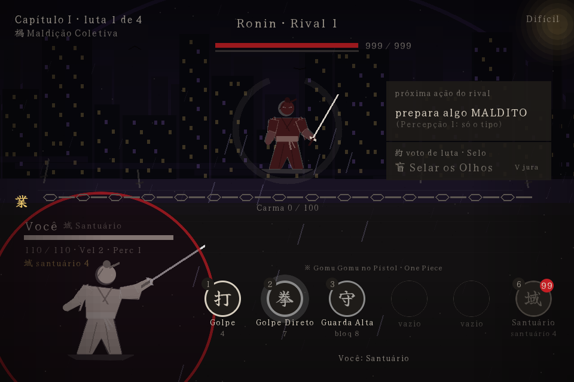
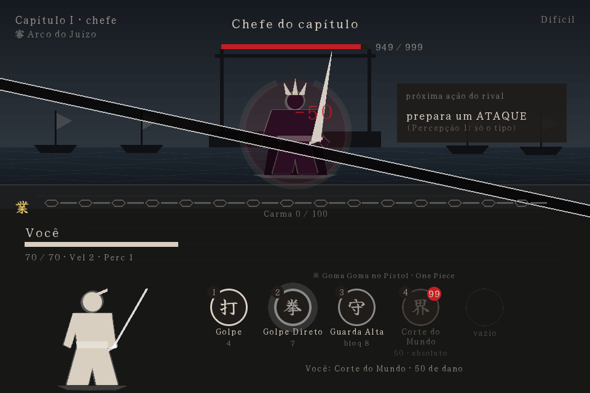
Cada Arco tem a sua arena, cada rival uma silhueta (Ronin, Monge Errante, Shinobi, Oni; o chefe é um colosso de quatro braços), e cada Despertar a sua aura. O rival entra numa pincelada com o nome em caligrafia; na vitória, ele se desfaz em tinta; na derrota, as correntes se fecham sobre você. E tudo soa: taiko, gongo, shamisen e koto, sintetizados pelo próprio jogo, com uma música para cada momento.
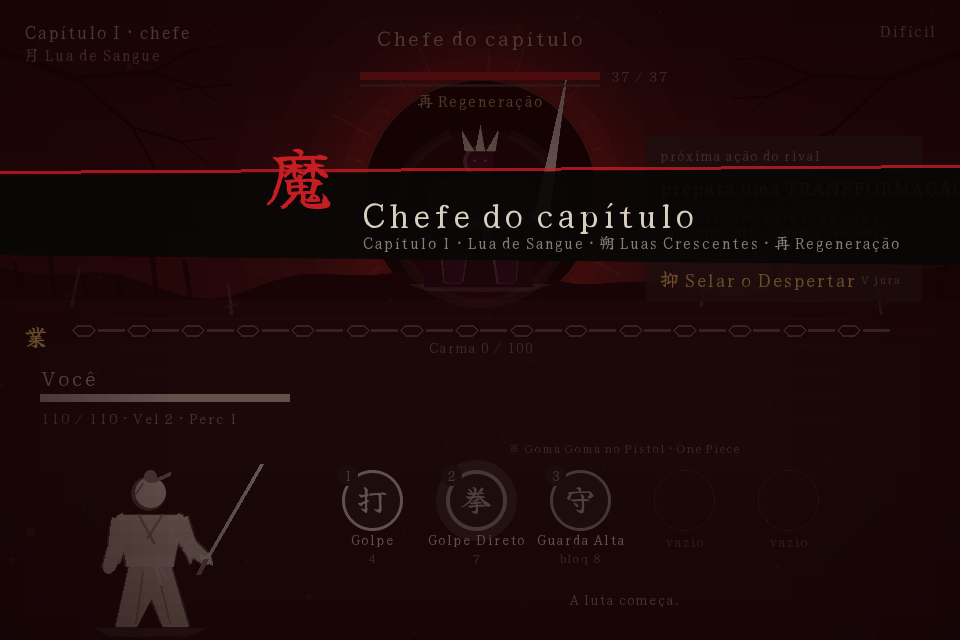
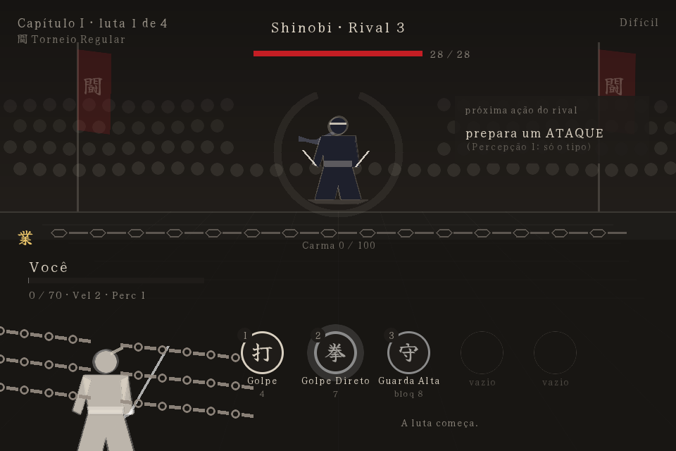
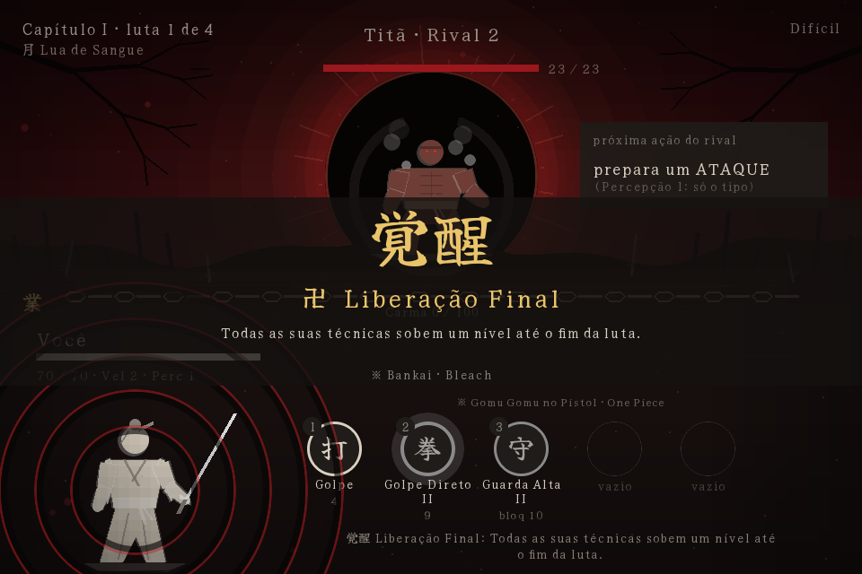
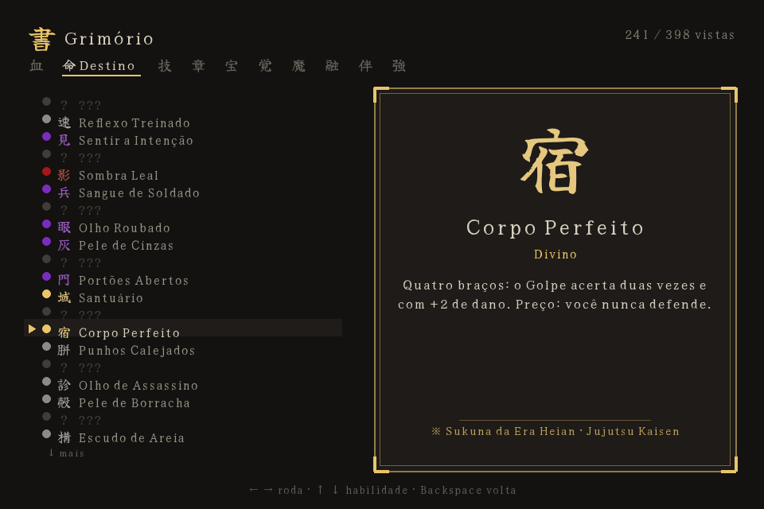
章Quatro modos, um piloto
Os modos não foram ajustados no olho. Um piloto automático — uma IA simples que defende o que vê chegando e bate forte no resto — joga milhares de runs inteiras, e a vida dos rivais e a sua são ajustadas até cada modo bater na sua promessa.
| Modo | Vitória do piloto | Rivais | Sua vida |
|---|---|---|---|
| Acessível | ~45% | 12 + 4,57 por luta, chefe ×1,2 | 80 |
| Equilibrado | ~36% | 12 + 4,72 por luta, chefe ×1,2 | 76 |
| Difícil (padrão) | ~25% | 12 + 4,81 por luta, chefe ×1,25 | 70 |
| Brutal | ~10% | 12 + 5,92 por luta, chefe ×1,25 | 68 |
O primeiro rival tem sempre 12 de vida: um modo fácil não deveria significar lutas vazias. O piloto é propositalmente simples — um jogador de verdade, lendo o rival, vence mais.
誓Votos que pesam quem você é
Tirar o Juramento na roleta abre o Altar dos Votos. Como nos animes, você escolhe as restrições que se impõe, e quanto mais severo o voto, maior o poder.
Restrições e ganhos
Restrições vêm em quatro categorias: simples (−25% de vida, sem cura entre lutas), conduta (nunca usar defesa, nunca usar o Golpe básico), revelação (o rival te lê melhor) e risco (lutas com prazo, ou morrer abaixo de 20% da vida). Os pontos compram ganhos: simples em até cinco níveis (Força, Vigor, Percepção, Velocidade), especiais (Golpe Oculto, Pele de Espinhos, Primeiro Sangue…) e exclusivos (Segunda Vida, Carrasco, Sangue Frio).
O valor vem do que você sacrifica
Aqui está o que torna o sistema diferente: o valor de uma restrição não está numa tabela. O Altar pega a sua run do jeito que ela está — vida, técnicas, Carma — e simula o resto dela centenas de vezes, com e sem a restrição, usando os mesmos sorteios dos dois lados. A diferença em lutas vencidas é o sacrifício. Proibir a defesa vale muito para quem tem ótimas defesas e quase nada para quem não tem nenhuma.
pontos = S × (1 + S ÷ 2) × duração × categoria
- S é o sacrifício, em lutas vencidas a menos. O termo
1 + S ÷ 2faz sacrifícios maiores renderem bem mais que a soma. - Duração: só esta luta ×1, até o fim do capítulo ×1,3, o resto da run ×1,75.
- Categoria: simples ×1, conduta e revelação ×1,15, risco ×1,4.
- Retorno decrescente por restrição: cada uma credita no máximo 1,5 luta. Uma restrição devastadora sozinha não passa disso; para ir além, é preciso juntar restrições diferentes.
- Preço crescente: o segundo nível de um ganho custa o dobro do primeiro, o terceiro o triplo. Um câmbio único escala o preço de tudo — é a alavanca que coloca o Juramento no lugar.
Calibrado assim, o Juramento vale cerca de +13 pontos de vitória para quem o tira depois do primeiro chefe — o poder mais forte entre os Malditos, de propósito, porque é o que mais exige do jogador.
Quebrar
Até três votos ao mesmo tempo. Quebrar um é possível — num momento de desespero — mas você perde os ganhos dele, metade da vida atual e todo o Carma, e precisa jurar um voto de quebra, só de restrições. Quebrar o voto de quebra encerra a run.
理Tudo que é número é dado
O jogo é híbrido: regras em Python puro, sem tela, e apresentação pela Ouroboros Engine.
rodas.py,carma.py,mesa.py,combate.py,efeitos.py,votos.pyerun.pynão importam pygame. A tela e o simulador giram pela mesmaMesa: o que a simulação mede é o que o jogador vê.- Raridades, Carma, técnicas, modos e votos vivem em JSON, em
karmabound/data/. O catálogo mostra todo esse conteúdo em forma legível e é gerado a partir dos dados. - A tela é uma
ISceneda engine e desenha só pela API doIRenderer. A mandala precisava de círculos, arcos, polígonos e kanji — e a engine não tinha nenhum dos quatro. O marco M16 da engine nasceu deste jogo:draw_ui_line,draw_ui_circle,draw_ui_arc,draw_ui_polygoneload_font, agora disponíveis para todos os jogos dela. - A fonte é a Yuji Syuku, caligrafia a pincel com licença livre (OFL). Ela cobre todos os kanji e os acentos do português — um teste garante que nenhum kanji novo vire um quadrado vazio.
測Medir em vez de adivinhar
Quase toda decisão de balanceamento deste jogo saiu de uma simulação, e algumas simulações corrigiram decisões anteriores. Dois exemplos:
- A primeira calibração dos modos estava errada porque o piloto equipava uma versão provisória do Juramento que o machucava em toda luta. Quando o Juramento virou o Altar, as vitórias saltaram — e os modos foram recalibrados.
- A primeira versão dos votos dava pontos demais para gastar com de menos: as restrições custavam mais do que todo o catálogo de ganhos devolvia. Daí vieram os ganhos em níveis, os exclusivos e o teto por restrição.
pytest # regras, tela, votos e calibração, sem janela
python tools/simular.py --combate # vitórias, Carma e Percepção por modo
python tools/medir_juramento.py # quanto o Juramento vale em pontos de vitória
python tools/capturar_telas.py # as imagens deste manual
python tools/gerar_catalogo.py # docs/CATALOGO.md a partir dos dados未O que ainda não existe
- A progressão entre runs e o estilo de arte definitivo dos personagens.
- Um executável que dispense o Python.